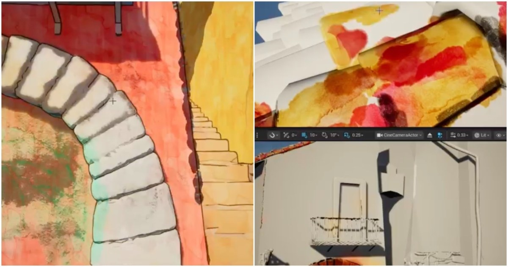

Inky 展示在 UE5 模型表面直接繪畫的工作方式
Ahmed Hamed 展示開發中的 Inky，可在 Unreal Engine 5 編輯器直接為模型表面繪畫。展示包含 16 種筆刷、濕畫混色及乾燥效果，並支援圖層與繪圖板；目前仍在早期開發，尚不能視為正式可用產品。

Unreal ★★★★★
完整分析
筆觸附著在模型表面
開發者在編輯器內直接繪製建築立面，並表示筆觸會保持附著幾何表面，旋轉攝影機或改變光照時不會跟著漂移。這是原文對展示行為的說明，並未公開貼圖儲存結構或筆觸投射演算法。
傳統畫材手感帶入場景
目前列出的 16 種筆刷包含墨水、鉛筆、粉筆、炭筆、水彩與厚塗，水彩可在潮濕時混色並乾燥，另支援圖層與繪圖板。可推論這讓場景表面繪畫能在既有引擎檢視中調整，但原文沒有比較外部貼圖軟體的製作速度。
早期展示與另一工具須區分
文章明確說 Inky 還在早期開發並徵求回饋；後段的 Shadow Painter 是另一位作者的工具，其陰影跟隨光源功能不能算到 Inky。原文亦未列 Inky 的售價、下載方式或正式發布日，現階段應按開發展示理解。
BRIEF｜來源已驗證；證據深度較有限，完整分析會明確區分已知資訊與待驗證事項。